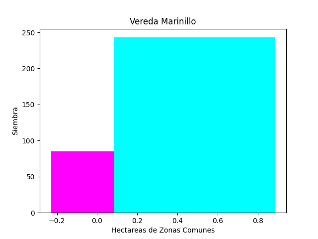

Reportes Empresariales
Yarumal es un municipio de Colombia localizado en la subregión Norte del departamento de Antioquia. Su cabecera municipal está conformada por 20 barrios y la zona rural por 52 veredas y 7 corregimientos. Su clima es frío debido a su elevación sobre el nivel del mar (2.353 m). El nombre actual, Yarumal, proviene de la especie vegetal de nombre Yarumo, de la familia Urticaceae, muy abundante en la región por los días de la fundación y conocida en el lenguaje botánico latino como Cecropia peltata L. El municipio también es llamado la Ciudad Retablo, la Estrella del Norte y la Sultana del Norte
Apreciado usuario, el reporte generado es:
Diagarama de barras
